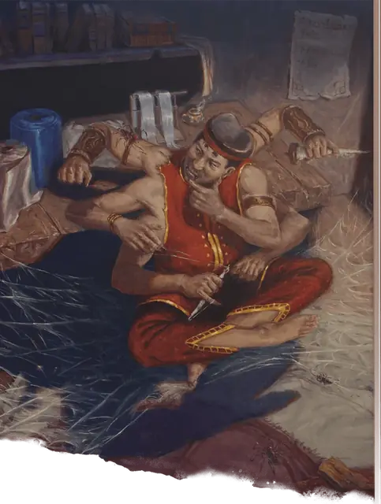

Аранея
Aranea
Среднее Чудовище, Нейтральное

Класс Защиты 14 Инициатива +3 (13)
Хиты 66 (12к8 + 12)
Скорость 30 футов, Лазания 30 футов (только в форме паука или в гибридной форме)
| мод | спас | ||
|---|---|---|---|
| СИЛ | 10 | +0 | +0 |
| ЛОВ | 17 | +3 | +3 |
| ТЕЛ | 12 | +1 | +1 |
| мод | спас | ||
|---|---|---|---|
| ИНТ | 12 | +1 | +1 |
| МДР | 10 | +0 | +0 |
| ХАР | 15 | +2 | +2 |
Чувства Тёмное зрение 60 футов, пассивное Восприятие 12
Языки Общий
Опасность 2 (450 опыта; БВ +2)
Особенности
Паучье лазание (только в форме паука или в гибридной форме). Аранеа может лазать по сложным поверхностям, включая потолки, без совершения проверок характеристик.
Хождение по паутине. Аранеа игнорирует ограничения перемещения, вызванные паутиной, и знает точное местоположение всех других существ, находящихся в контакте с той же паутиной.
Действия
Мультиатака. Аранеа совершает две атаки Укусом, Размашистым ударом или Пращой в любой комбинации.
Укус (в форме паука или в гибридной форме). Бросок рукопашной атаки: +5, досягаемость 5 фт. Попадание: 6 (1к6 + 3) Колющего урона плюс 2 (1к4) урона Ядом.
Размашистый удар. Бросок рукопашной атаки: +5, досягаемость 5 фт. Попадание: 7 (1к8 + 3) Дробящего урона.
Праща (только в гуманоидной или гибридной форме). Бросок дальнобойной атаки: +5, дистанция 30/120 фт. Попадание: 8 (2к4 + 3) Дробящего урона.
Сотворение заклинаний. Аранеа сотворяет одно из следующих заклинаний, не нуждаясь в Материальных компонентах (заклинательная характеристика — Харизма, Сл спасброска заклинаний 12):
Неограниченно: Безмолвный образ, Дружба
1/день: Удержание личности
Бонусные действия
Перевоплощение. Аранеа перевоплощается в гуманоида, или в гибрид паука и гуманоида, или в свою истинную форму паука. Её статистика, кроме размера, не меняется в зависимости от формы. Снаряжение, которое она носит или несёт, не трансформируется.
Бонус мастерства +2
Среда обитания Болота, Леса
Сокровища Личные
Аранея
Скрытные мастера и торговцы
Аранеи — замкнутые оборотни. В своём естественном облике аранея (или араней) напоминает грузного горбатого паука с двумя короткими руками под головой. Они способны превращаться в Гуманоида или в многорукий гибрид паука и Гуманоида. Аранеи живут обособленными общинами, например на Паучьем болоте в Калимшане, где создают прекрасные предметы, выражающие их мастерство, и иногда обмениваются ими с другими народами. Большинство араней предпочитают избегать боя, сбивая врагов с толку ровно настолько, чтобы удрать в безопасное место.
Совершите бросок по таблице «Ремёсла араней» для вдохнования или определите сами ремесленный талант аранеи.
Ремёсла араней
| к6 | Аранея искусна в создании… |
| 1 | Исключительно удобных простыней и одеял. |
| 2 | Мебели из дерева и парусины. |
| 3 | Ядов, что усыпляют, но не убивают. |
| 4 | Припарок и мазей из целебных трав. |
| 5 | Шёлка с затейливыми паутинными узорами. |
| 6 | Историй с хитро скрытой моралью. |